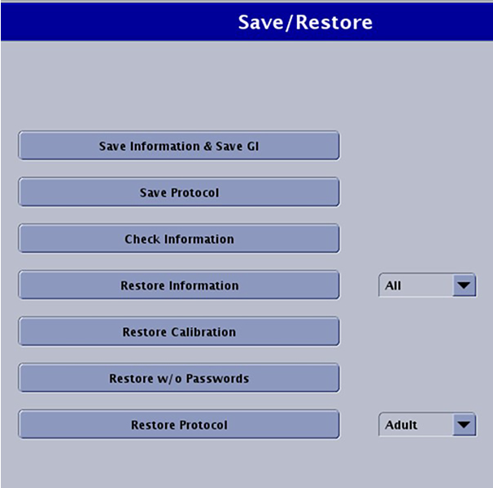

Save the current configurations and files in order to restore them later, if needed.
Prerequisites
Consumables
Item
Quantity
Part number
Manufacturer
Writable Verbatim or TDK 48x CD-R
1 of either
-
Verbatim or TDK
Verbatim or TDK 2x DVD-R
-
Verbatim or TDK
Required conditions
A Class M SSA key or Class C/A2 SSA soft key license is needed to access Guided Install from SIGNA applications. It is not needed when launched as Root. Refer to Service licensing for information on how to install an SSA soft license.
About this task
When doing service engineering tasks, you often need to save the current configurations and files so that you can restore them later.
In the left navigation pane, go to Utilities > Save/Restore.
Figure 1. Save and Restore options

Insert the writable medium that you will use (either a writable DVD-R or CD-R).
Click Save Information & Save GI.
Result
The following message shows: Do you really want to Save Information and GI Config to CD/DVD?.
Click Yes to continue.
Result
After SaveInfo creation begins, a progress message shows.
If an error or warning message shows, choose one of the following:
If the media is not recognized, make sure that the media is in the drive and click Retry.
If some information is not saved, click Yes on the warning message to view the log and see which files were not saved.
Figure 2. Warning log example
Note Even if the warning shows, the SaveInfo was saved; the files listed in the warning log were not.
Note Protocols may fail to save if an illegal character is used in the name. You must edit the protocol and remove the illegal character before the system will save the protocol file.
After the SaveInfo is completed, remove the media and write the date and time on it.

 Note Even if the warning shows, the SaveInfo was saved; the files listed in the warning log were not.Note Protocols may fail to save if an illegal character is used in the name. You must edit the protocol and remove the illegal character before the system will save the protocol file.
Note Even if the warning shows, the SaveInfo was saved; the files listed in the warning log were not.Note Protocols may fail to save if an illegal character is used in the name. You must edit the protocol and remove the illegal character before the system will save the protocol file.